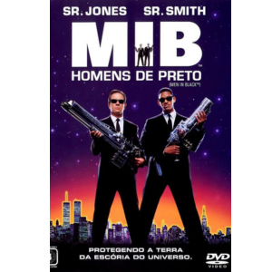
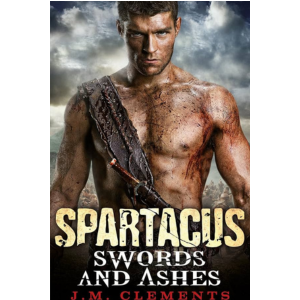
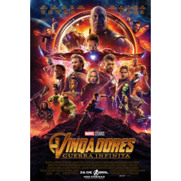

Velozes e Furiosos: Desafio em Tóquio

Sean Boswell é um piloto de rua que desafia seu rival e bate o carro no fim da corrida. Ele decide se mudar para o Japão para evitar a prisão nos
Estados Unidos, já que os rachas não são nada populares com as autoridades. Em Tóquio, ele começa a aprender um excitante e perigoso estilo novo de
competir nas ruas. Só que os riscos ficam ainda mais altos quando Sean decide rivalizar com o campeão local e acaba se apaixonando pela namorada dele.
Entre Montanhas

conta a história de Drasa (Anya Taylor-Joy) e Levi (Miles Teller), dois agentes de elite que são enviados para proteger lados opostos de um desfiladeiro.
Eles não sabem o que vão enfrentar, mas precisam trabalhar juntos para sobreviver ao que está lá dentro.
Jogos Mortais

Adam e Dr. Lawrence Gordon acordam acorrentados a um tubo enferrujado ao lado de um cadáver com um revólver. Ambos não sabem o motivo de estarem lá, só
têm uma. Na gravação, uma voz diz a Lawrence que ele deve matar Adam em oito horas ou sua esposa e filha morrerão. Eles são vítimas de um psicopata
conhecido como Jigsaw. O filme de estreia de James Wan ficou em sua cabeça por algum tempo. Na verdade, no ano anterior ao filme, ele filmou essa ideia
em um curta-metragem de mesmo nome. É um thriller psicológico original e cruel que deu um novo ar ao gênero de serial killers. Filmado e editado em 18
dias, foi concebido como um produto do mercado videográfico. Mas as primeiras exibições foram positivas e os produtores decidiram lançá-lo para o
cinema. E eles estavam certos: fez tanto sucesso nas bilheterias que germinou em uma extensa saga. Entre todos os prêmios recebidos em competições
mundiais, destaca-se o prêmio do público do festival de cinema de San Sebastian daquele ano.
John Wick

John Wick é um lendário assassino de aluguel aposentado, lidando com o luto após perder o grande amor de sua vida. Quando um gângster invade sua casa,
mata seu cachorro e rouba seu carro, ele é forçado a voltar à ativa e inicia sua vingança.
Homes de Preto

Os agentes K e J são policiais futuristas que trabalham em um projeto supersecreto do governo. Ele envolve a captura e deportação de seres espaciais
não autorizados a ficarem na Terra.
O auto da Compadecida

As aventuras de João Grilo e Chicó, dois nordestinos pobres que vivem de golpes para sobreviver. Eles estão sempre enganando o povo de um pequeno
vilarejo, inclusive o temido cangaceiro Severino de Aracaju, que os persegue pela região.
Spartacus

O rebelde Spartacus, nascido e criado escravo, é vendido para o treinador gladiador Batiatus. Depois de semanas sendo treinado para matar na arena,
Spartacus se rebela contra seus donos e lidera os outros escravos em uma rebelião. À medida que os rebeldes vão de cidade em cidade, os seus números
aumentam conforme os escravos fugidos se juntam a eles. Sob a liderança de Spartacus, eles vão a caminho do sul da Itália, onde eles podem atravessar o
mar e voltar para suas casas.
Vingadores

Loki, o irmão de Thor, ganha acesso ao poder ilimitado do cubo cósmico ao roubá-lo de dentro das instalações da S.H.I.E.L.D. Nick Fury, o diretor desta
agência internacional que mantém a paz, logo reúne os únicos super-heróis que serão capazes de defender a Terra de ameaças sem precedentes. Homem de
Ferro, Capitão América, Hulk, Thor, Viúva Negra e Gavião Arqueiro formam o time dos sonhos de Fury, mas eles precisam aprender a colocar os egos de lado
e agir como um grupo em prol da humanidade.